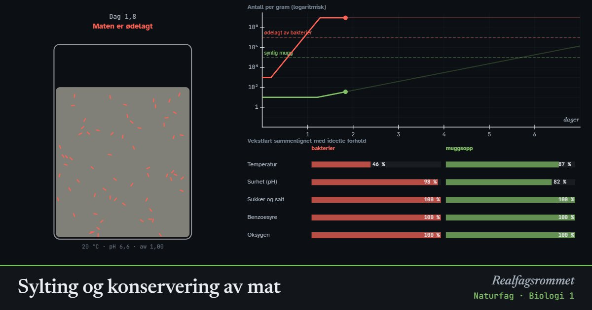

Sylting og konservering av mat
Mat blir ødelagt når bakterier og muggsopp vokser i den. Alle konserveringsmetoder går ut på å gjøre forholdene dårlige for mikroorganismene: kulde, syre, sukker, salt, konserveringsmidler eller koking og lufttett lokk.
Start animasjonen
Formler
Om animasjonen
Mikroorganismer trenger riktig temperatur, vann, næring og ofte oksygen. Grafen viser antall bakterier og muggsopp per gram mat på logaritmisk skala. Når det er rundt 10⁷ bakterier per gram, er maten ødelagt.
Kulde bremser veksten, men dreper ikke. Syre gir lav pH, og de fleste bakterier stopper under pH 4,5. Sylteagurk legges i eddik, og surkål blir sur av melkesyre. Sukker og salt binder vannet, slik at vannaktiviteten synker og mikroorganismene ikke får tak i nok vann.
Muggsopp tåler surere og tørrere forhold enn bakterier. Derfor kan det komme mugg på syltetøy, men muggsopp trenger oksygen. Koking dreper mikroorganismene, og et lufttett lokk hindrer at nye kommer inn. Mat som ikke er sur, må kokes ekstra godt før den lagres lufttett, ellers kan farlige bakterier som tåler mangel på oksygen vokse.
Benzoesyre (E210) er en karboksylsyre. Bare den udissosierte formen, C₆H₅COOH, er hydrofob nok til å trenge gjennom cellemembranen til mikroorganismene. Den virker derfor best i sur mat. Sorbinsyre (E200) virker på samme måte. Modellen er forenklet, og tallene er omtrentlige.
Prøv dette
- Sammenlign «Melk på benken» og «Melk i kjøleskapet». Hvor lenge holder melken seg i hvert tilfelle?
- Hvorfor vokser det ikke bakterier i sylteagurk? Hva bremser muggsoppen?
- Velg syltetøy. Hvilken faktor stopper bakteriene, og hvorfor kan det likevel komme mugg?
- Slå på benzoesyre og endre pH fra 6,5 til 4. Forklar hvorfor konserveringsmiddelet virker bedre i sur mat.
Kompetansemål
- Naturfag: Næringsstoffer og et variert kosthold
- Naturfag: Syrer og baser (også i yrkesfagene)
- Biologi 1: Virus, bakterier og sykdom